はじめに
ホーム > Java > JJUG2020/05/23に、Javaの生誕25周年を記念したイベントがJJUGというグループで開催されました。
イベントのリンクはこちら
このようなご時世なのでオンラインでの開催でした。
この記事は、イベントの発表に使われた資料と私のメモとtwitterの呟きをまとめたものです。
当日の動画
twitterまとめ
Java14 の新機能を軽く
きしださんの発表
発表資料
内容
2020/3/17にリリースされたJava14の機能を紹介。 16個のJEPsが取り込まれた。 LTPではない。次のLTSは2021年9月予定のJava 17
【言語】
| JEP（※1） | 概要 |
|---|---|
| 359 | Records (Preview) |
| 305 | Pattern Matching for instanceof (Preview)（※2） |
| 368 | Text Blocks (Second Preview) |
| 361 | Switch Expressions (Standard) |
【GC】
【ライブラリ】
| JEP（※1） | 概要 |
|---|---|
| 358 | Helpful NullPointerExceptions |
| 349 | JFR Event Streaming（※2） |
| 370 | Foreign-Memory Access API (Incubator) |
| 352 | Non-Volatile Mapped Byte Buffers |
【ツール】
| JEP（※1） | 概要 |
|---|---|
| 343 | Packaging Tool (Incubator)（※3） |
| 367 | Remove the Pack200 Tools and API |
【JDK】
| JEP（※1） | 概要 |
|---|---|
| 362 | Deprecate the Solaris and SPARC Ports |
公式はこちら
※1 JEPJDK Enhancement Proposalsの略。 JDKに対する変更の提案を管理する番号。
参考
JSRとJEPとJBSの見方や調べ方について
JEPの目次
プレビュー版のこと。 機能としては保証されているが、どのように使うべきかは議論の余地があるもの。開発者が実際に使ってみて、フィードバックを受けて今後もJava SEの基本機能として提供し続けるかどうかが決まる。
※3 Incubator
開発者からのフィードバックを得るために、Java SEに含めた実験的なAPI。
参考：Java SE 9はAPI実験の場をIncubator Modulesで提供、第1弾はHTTP/2 Client
試用機能について

今回ご紹介するもの
◆言語
Text Blocks (Second Preview)
JEP368:Text Blocks (Second Preview)ダブルクォート３つで囲むことで複数行のテキストを書くことができるようになった。
まだPreview。15でStandardになる予定。 JEP 378参照
Switch Expressions (Standard)
JEP361:Switch Expressions (Standard)Switchステートメントとしてだけでなく式として使える。
Java 12でPreviewとして導入され、Java 13で少し変更が入って今回のJava 14で標準化された。
・caseに複数のラベルを使用できるようになった。
・ラムダ式のようなアローが使え、breakが不要になった。


アロー形式で値を返す場合はyieldを使う
twitterの反応
・Switch Satementは簡易なFactoryとしてつかえそう
・JDK14のswitch式便利で、わかりやすいね。
・caseでアロー形式使えるように。switch「式」になった。
・λに、直接、return含むswitch書くと怒られてたのが、式になって怒られなくなるねー。
Records (Preview)
JEP359:Records (Preview)
Recordsを使用したクラス定義
上記クラスはこのようにクラスを宣言下のと同義。
Objectメソッドのバイトコード（下記の例はequalsメソッド）

資料より抜粋
Invoke Dynamicにより、コンパイル時ではなく実行時に処理コードが生成されるようになっている。このため、もし将来のバージョンでより最適な実装に変わったとしても、古いバージョンでコンパイルされたコードも新しい実装で動くようになっている。
次のバージョンではSealed Classesというものが導入される予定。
・継承するクラスを限定できる（インターフェースでもよい）。
・Switch式でdefaultが不要になる。
twitterの反応
・入れものクラスを作る時にRecordは良いなー
・Record、kotlinでdata classよく使うからJavaでも使えて嬉しい
Pattern Matching for instanceof (Preview)
JEP305:Pattern Matching for instanceof (Preview)Kotlinのスマートキャストのような機能
これまでのinstanceofPattern Matching for instanceof
今後追加される機能
Pattern with switch
switchでパターンマッチを使う
Deconstruction
レコードの分解
twitterの反応
・PatternMatching for instance-of。 パターンマッチングというよりまだ今はKotlinのスマートキャストみたいな感じ。今、普通にキャストしたほうがバイトコードが短くなる
・Java14ではinstanceofのチェックを通った後はcastが不要になる。コンパイルって賢くなったねぇ
・Scalaの文法を知ってると、知っているものの違う書き方バージョンが紹介されているみたいな気持ちになる。Javaも使いやすくなっているしやってみたい
◆ライブラリ
Helpful NullPointerExceptions
JEP358:Helpful NullPointerExceptions-XX:+ShowCodeDetailsInExceptionMessagesオプションを付けて実行する。
将来のバージョンではデフォルトに
JShellの場合は-R-XX:+ShowCodeDetailsInExceptionMessages
twitterの反応
・メッセージが親切になって皆がもっとNullPointerException大好きになるらしい
・Helpful NPE結構ナイスかも
JFR Event Streaming
JEP349:JFR Event Streaming
イベントとして処理できるようになったので監視に使いやすくなった。
twitterの反応
・JFR Event Streamingは興味深い機能ですね。いろいろ応用が効きそう。
・Foreign Memory Access API。Java ヒープ外のメモリを扱う。GCの影響を排除する。
Foreign-Memory Access API (Incubator)
JEP370:Foreign-Memory Access API (Incubator)

◆ツール
Packaging Tool (Incubator)
JEP343:Packaging Tool (Incubator)


・Java14 カスタムランタイムの作成：
jlink --add-modules 'jdeps --print-module-deps App.class' --output myrt
・カスタムランタイムを使ったパッケージの作成：
jpackage --name myapp_min --input target --main-jar app.jar --main-class App --runtime-image myrt
twitterの反応
・なに？rpmでパッケージングできるとな！？リリース楽になりそう！
・jpackageはjlinkと合わせて使うのがおすすめ
参考資料
・Java 14新機能まとめ
・Java 14で最低限押さえておきたい新機能をEclipseで使ってみた
IDE起点で2020年代の開発環境を眺めてみる
いろふさんの発表
発表資料
開発環境に必須のツール

資料より抜粋

IDEに期待すること


IDEの位置づけ


twitterの反応
・「開発のツールは開発を邪魔するものであってはならない」ってすごくわかる。
IDEとビルドツール


・IDEはコーディング支援のため、ビルドツールと近いビルドをする。
・あくまでコーディングを助けるものであり、それ以上ではない。
位置付けから役割が決まる
・開発者がコードを書くのを助けるためだけのものはIDE担わせる
・それ以外はビルドツールに担わせる
・同じ役割を分散させない
IDEとビルドツール
・ビルドツールに依存させる
・ビルドツールができることはビルドツールにやらせる
・特にアプリケーションに影響を与えるものはIDEに設定してはいけない
例: JDKのバージョン、ライブラリ管理、ソースフォルダの構成
twitterの反応
・ああ、このモデル図、バージョン管理、IDE、ビルドサーバとかの関係はわかりやすい〜
・Eclipseのビルドパスにポチポチとクラスライブラリのjarを追加するとかイマドキやってられんからね。IDEがビルドツールに依存するという立て付けが理想的だと思う。そうあってほしい。
・ビルドツールに依存はともかくIDEに依存はダメだよねっって感じ
・xmlツライしyamlでbuild出来るツールとかないかな
・開発者がコードを書くのを助けるものはIDE。たとえば、スペース表示非表示とかビルドツール設定に書くのはちがうよね。
・アプリケーションに影響を与えるものはIDEに設定してはいけない。IDEの設定で動かなくなるとか意味がわからない。IDEは開発者の方を向いたものだけまとめる。
IDEとJDK
IDEから使う三種類のJDK
①IDE自身が使うJDK ②作る時に使うJDK
・IDEがビルドするときに使う
・主にJCLの補完や検査に影響
・実行時に使われたりする
・使われなかったりする
・IDEからビルドツールを使用するときに指定するJDK
・三種類の中だと一番重要
・IDEバンドルのものは基本的に使わない


ここを抑える理由
・異なるJDKを使う可能性があることを知っていると、何か意図しない動作をした時に「ここかな？」と思える。
・特にJDK群雄割拠時代なので。（申し訳程度の2020年感）
こまごましたこと

twitterの反応
・せっかくIDEが警告を出してくれてるのにそれを残したままコミットしないで欲しい
まとめ

twitterの反応
・「フォーマッタ切り離してくれないかなぁ」
・確かにIDEに依存しないフォーマッタ欲しい
・VSCodeが使っているLanguage Serverは良い機能 > コードフォーマットや文法チェック、補完
Jakarta EE/Microprofileを利用したクラウド・ネイティブ・アプリの開発
てらださんの発表
発表資料
本編

J2EE → Java EE → Jakarta EE
JavaEE5-8 xml地獄からの脱却。J2EEアプリを開発しやすくした。CDI（DIコンテナの標準化）
JavaEE テストツール tckを使って高額のお金を払ってテストを通さないとJavaEEアプリケーションサーバーを名乗れなかったが、それもEclipseファウンデーションに寄贈されたので新興のAPサーバーベンダーもJavaEEアプリケーションサーバーに参入し易くなった。

Jakarta EE 9 が2020年6月12日にリリース予定。一番大きな変更はパッケージ名の変更 javax.* → jakarta.*
JAXBの巻き取り、JavaSE8,11対応、EJB4.0(Pruning,削除など), Java Activation Frameworkの追加（メール対応）

Eclipse Microprofileのコミュニティ。Oracle, IBM, Red Hat,Payara, Microsoft,hazelcastなどの企業に加えて、LJC, SOUJavaというコミュニティも参加している


Eclipse MicroProfile 3.3 Feb2020リリース、GraphQL 1.0が追加された
MicroProfile GraphQL


twitterの反応
・Javaのバージョンアップの速さにしろ、MicroProfileにしろ、Helidon、Quarksとか新しいフレームワークも出てきて、Java界隈はここ数年大変革期なので情報を追うのが大変
・APサーバーを使っているSIerにとってはjavax.で定着・普及していたクラスライブラリの資産をjakarta.に洗い替えるという人柱仕様だからね。これはやっぱりでかい。これで、こけたらJakartaEEという言葉の求心力が下がってしまう気がする。
・MicroProfileって何だろう？疑問だったけど、寺田さんのデモでわかった。対SpringBootとして、JavaEE（Eclipse Foundation）が作ったサクッと作れるJavaEE(JakartaEE)のパッケージなんだね。
・寺田さんのデモめっちゃかっこええ…
Microprofile Starterでプロジェクト作成
⇒Dockerビルド
⇒k8sデプロイ
⇒本番アプリコンテナとデバッグ用アプリコンテナをデプロイ
⇒VSCodeからデバッグ接続、JMXコンソール接続
システムのモダナイズ 落ちても良いアプリのつくり方
伊藤ちひろさんの発表発表資料
内容
アプリのScaleについて
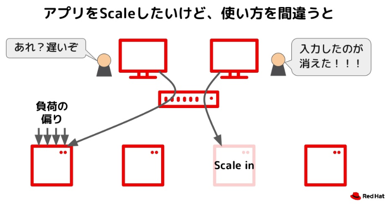資料より抜粋(5/45)
ステート
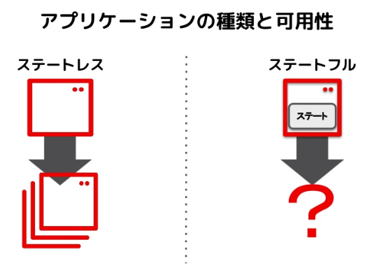資料より抜粋(8/45)
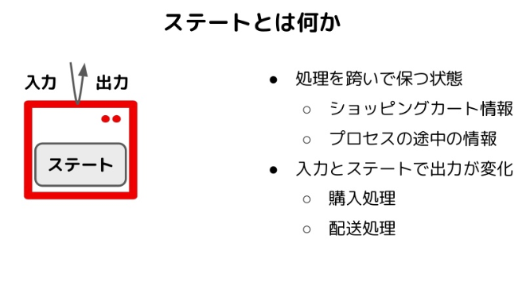
資料より抜粋(9/45)
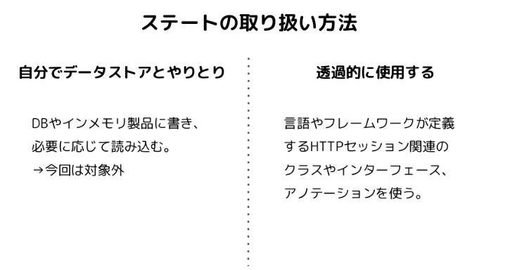
資料より抜粋(10/45)
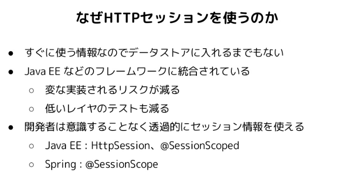
資料より抜粋(11/45)
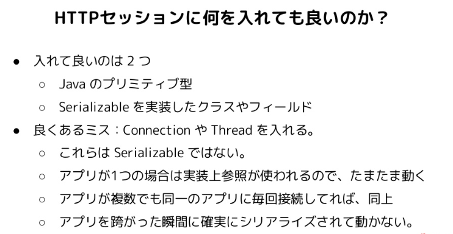
資料より抜粋(12/45)
twitterの反応
・む？Java新機能のRecordとHttpSessionへの格納、実は相性が良い？
資料より抜粋(14/45)
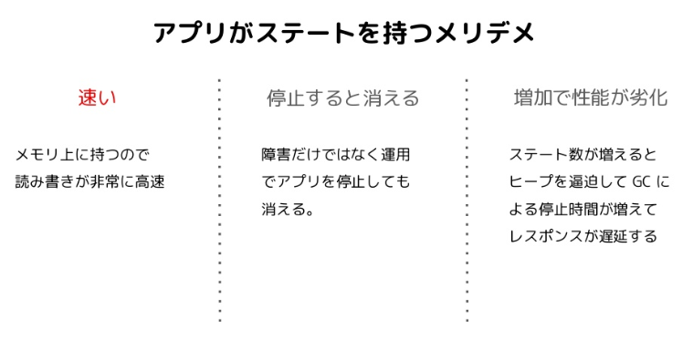
資料より抜粋(15/45)
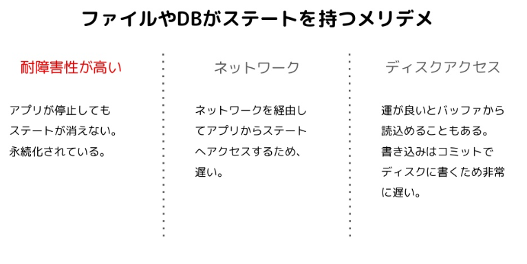
資料より抜粋(16/45)
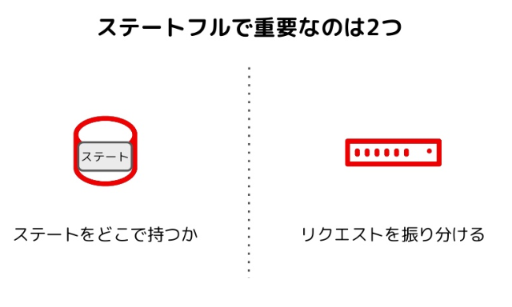
資料より抜粋(17/45)
可用性と性能を改善する３つの技術
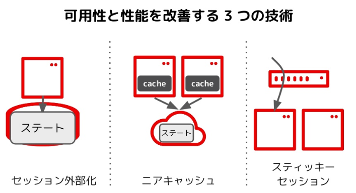資料より抜粋(18/45)
・セッション外部化
・ニアキャッシュ
・スティッキーセッション
スティッキーセッションの話

資料より抜粋(19/45)
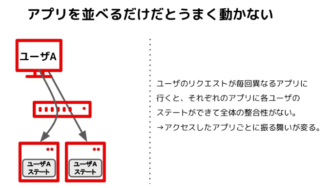
資料より抜粋(20/45)
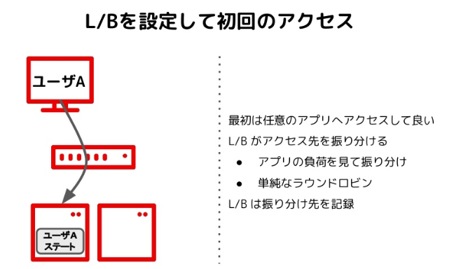
資料より抜粋(21/45)
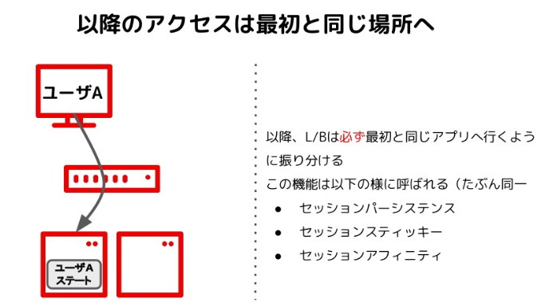
資料より抜粋(22/45)
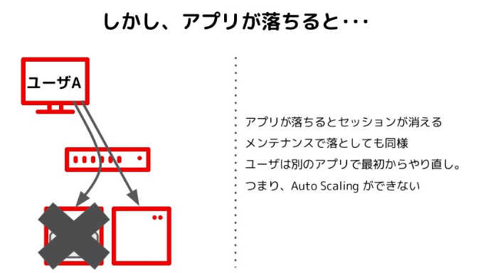
資料より抜粋(23/45)
twitterの反応
・LoadBalancerを設定して、スティッキーセッションでセッションを効率的にAPサーバーで状態を保持できる。
だが、アプリが落ちるとメモリが消えてしまうから、そこがよくない。
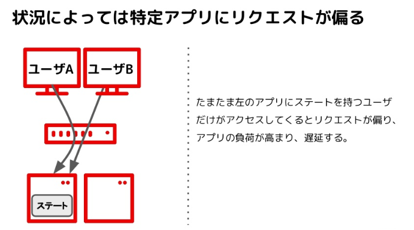
資料より抜粋(24/45)
セッション外部化の話
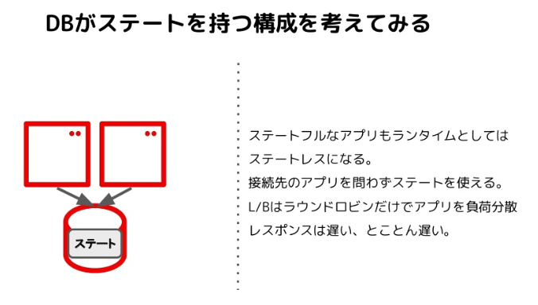資料より抜粋(25/45)
twitterの反応
・DBにステートを持たせると、アプリもランタイムもステートレスになり、アプリとしてはステートフルになる。でもレスポンスはとことん遅くなる。
スケールアウトの限界に達するとディスクフルで落ちる
ニアキャッシュの話
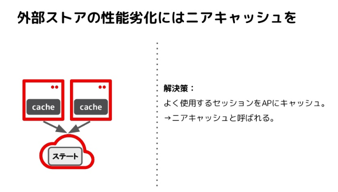資料より抜粋(26/45)
ニアキャッシュ＋スティッキーセッション
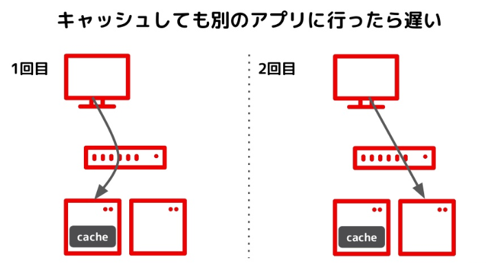資料より抜粋(27/45)
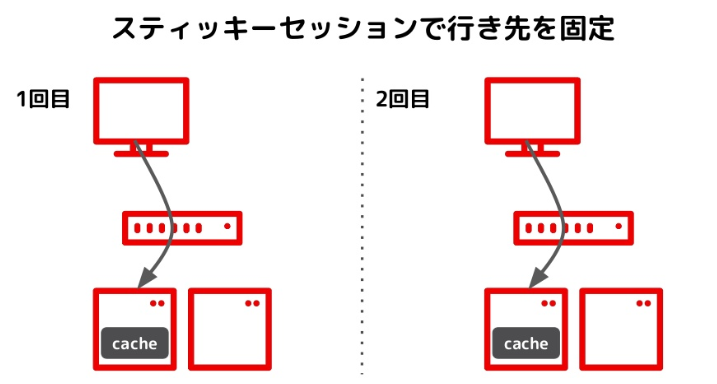
資料より抜粋(28/45)
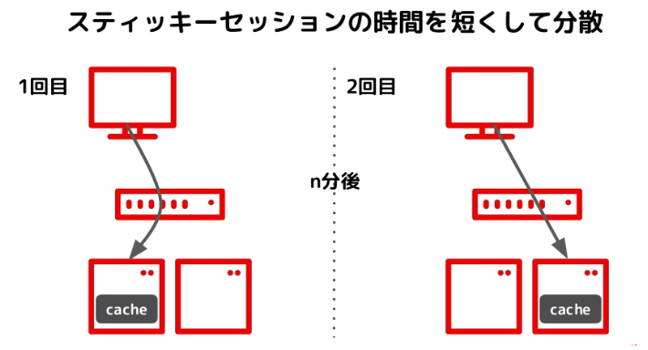
資料より抜粋(29/45)
twitterの反応
・外部ストアの性能劣化にはスティッキーセッション（時間を短くする）で行き先を固定の上で、セッション情報をニアキャッシュさせる。
よく使用するセッションをAPにキャッシュ
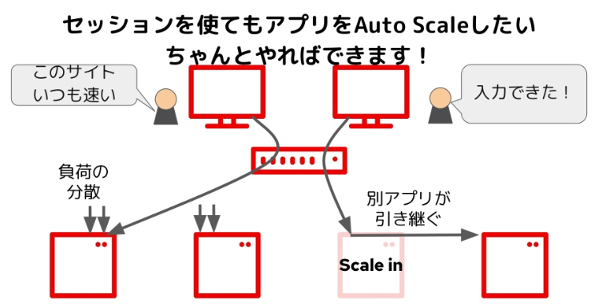
資料より抜粋(30/45)
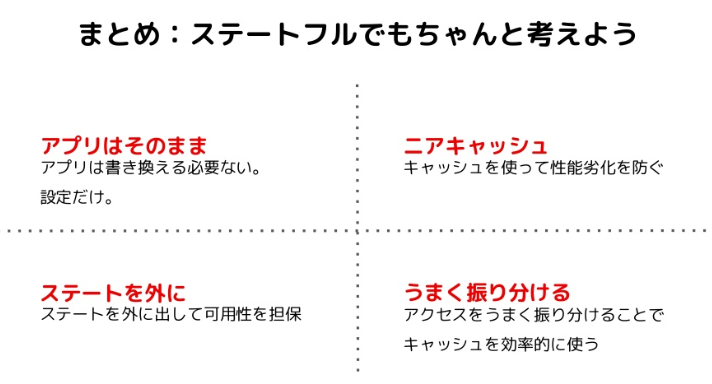
資料より抜粋(32/45)
サンプルソース
https://github.com/chiroito/wildfly-session-sample
https://github.com/chiroito/spring-session-sample
ブログ
https://b.chiroito.dev/entry/2020/05/19/182435
https://b.chiroito.dev/entry/2020/05/22/182451